Visual Acuity
Standard Snellen chart test to measure your distance vision clarity.
Start Test
Color Blindness
Ishihara plates to detect Red-Green color deficiencies.
Start Test
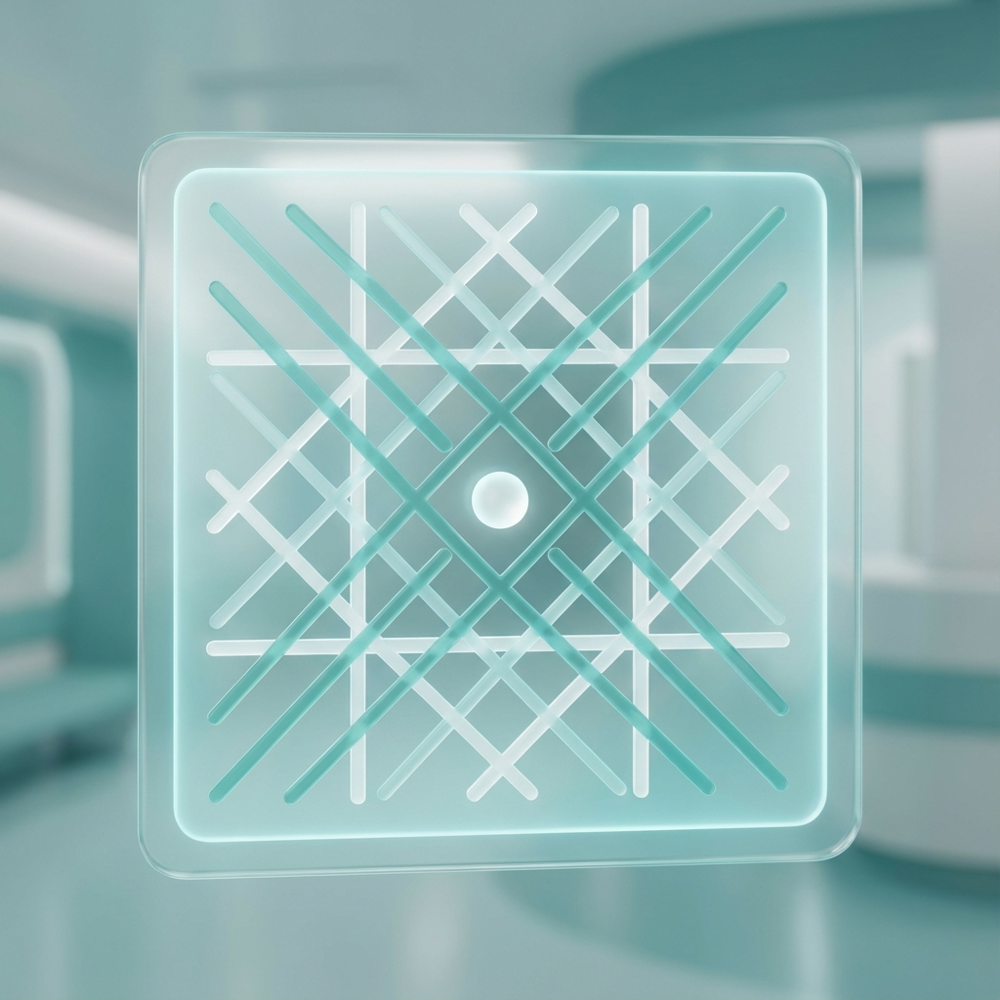
Amsler Grid
Check for macular degeneration and central vision distortion.
Start Test
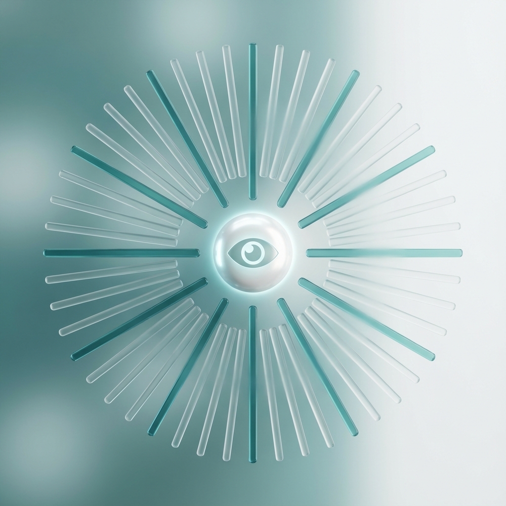
Astigmatism
Clock dial test to identify refractive errors causing blurred vision.
Start Test
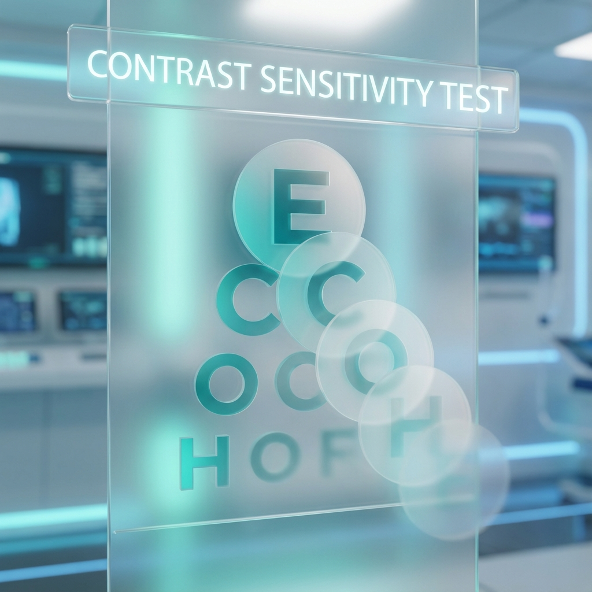
Contrast Sensitivity
Measure your ability to distinguish between finer increments of light and dark.
Start Test
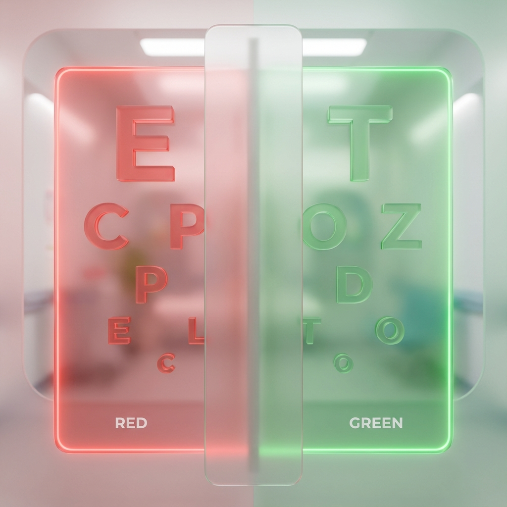
Duochrome Test
Determine if you are near-sighted or far-sighted using red/green balance.
Start Test
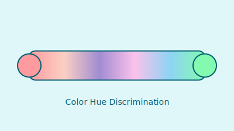
Color Hue Sort
Arrange colors in order to test subtle color discrimination skills.
Start Test
Near Vision
Test for Presbyopia and reading clarity at close distances.
Start Test

Peripheral Vision
Check your side vision field for potential blind spots.
Start Test
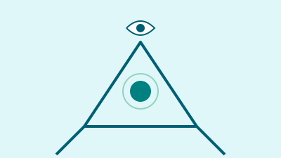
Dominant Eye
Find which eye is your "sighting" eye for sports and photography.
Start Test
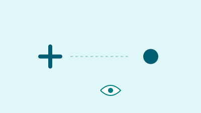
Blind Spot Map
Locate your physiological blind spot where the optic nerve connects.
Start Test
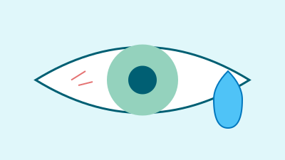
Dry Eye (OSDI)
Professional questionnaire to assess dry eye severity.
Start Test

Red Desaturation
Screen for optic nerve health by comparing color intensity.
Start Test
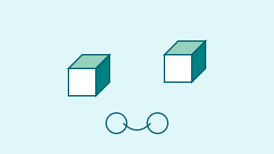
Depth Perception
Test your stereopsis and binocular vision capabilities.
Start Test

Saccadic Movement
Test how fast your eyes can jump between targets.
Start Test
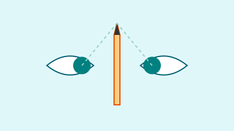
Convergence
Check for Convergence Insufficiency with the Pencil Push-up test.
Start Test

Pupillary Distance
Measure your PD using a webcam and credit card.
Start Test
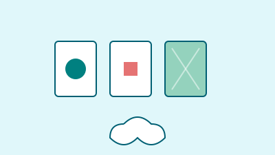
Visual Memory
Challenge your short-term visual recall abilities.
Start Test